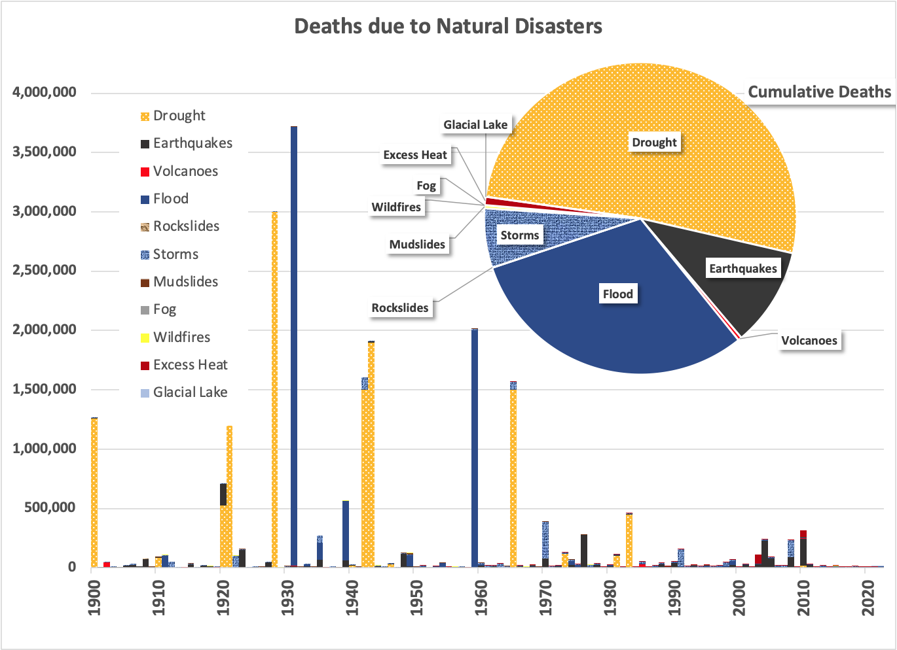

This week, I’m covering another New York Times article , “ How Do We Feel About Global Warming? It’s Called Eco-Anxiety” by Rome bureau chief Jason Horowitz. As the title suggests, this article connects global warming (through climate change) to mental illness. It seems like a stretch to establish a genuine causal relationship here. Climate(s) change (and most of the associated problems) relate to atmospheric carbon dioxide increases that are invisible to the naked eye and happen over decades. But when it comes to the social sciences, I’m not a professional, so let’s see where this thread leads.
The salient section:
Italy was in the grip of extreme heat waves, hellish wildfires and biblical downpours, and a nerve-wracked young Italian woman wept as she stood in a theater to tell the country’s environment minister about her fears of a climatically apocalyptic future.
“I personally suffer from eco-anxiety,” Giorgia Vasaperna, 27, said, her eyes welling and her hands fidgeting, at a children’s film festival in July. “I have no future because my land burns.” She doubted the sanity of bringing children into an infernal world and asked , “Aren’t you scared for your children, for your grandchildren?”
Then the minister, Gilberto Pichetto Fratin, started crying.
“I have a responsibility toward all of you,” he said, visibly choked up. “I have a responsibility toward my grandchildren.”
Europe is a continent on the verge of a nervous breakdown.
This is a mental illness, and Mr. Horowitz suggests it’s affecting the entire continent! There’s even data to support it, with an incredible 72% of Italians expressing pessimism and anticipating environmental deterioration. [It should be noted, however, that Ms. Vasaperna is an aspiring actress.]

A disturbing statement appears later in the article:
Some experts said that for mentally healthy people, a touch of eco-anxiety could be an engine for action.
I don’t know about you, but persistent anxiety is a poor motivator of change for me. And it sounds like it’s gotten beyond “a touch” for many Europeans, leading to an irrational hysteria. Like the proverbial deer in the headlights, untreated anxiety can lead to unwanted outcomes.
It’s seriously affected one young Italian woman enough to change her approach to family planning (or perhaps to advancing her career), but what is the root cause? Let’s explore the etiology.
There are several names beyond this eco-anxiety, most coined by “experts”, but my favorite is “solastalgia”. Unlike nostalgia (literally, pain caused by a return home), solastalgia is a word coined to describe the pain of remaining in a home that is changing. [Irritatingly to my inner linguist, the neologism mixes Greek and Latin roots and should more accurately be referred to as menontalgia. But I digress.]
The motivation could be more calculated: The science of psychology wants to access the gravy train that climate change provides to the physical sciences. It doesn’t mean the feelings aren’t real, but they may be recategorized for effect. I think they should be more generally binned under “learned helplessness 1 ”, a paralyzing psychological condition where stress leads to pointless (generally counterproductive) responses.
But dropping solastalgia (eco-anxiety) into established structures seems too easy: The experts (who should know better) double down on their value signaling exercise.
“In this moment, eco-anxiety is something that will bring people to act in a positive way,” said Giampaolo Perna, a psychiatrist and expert in anxiety at the Humanitas San Pio X hospital in Milan. “And try to protect the environment.”
This is ridiculous. Helplessness is learned precisely by trying and failing repeatedly; no individual can protect the environment alone, so establishing that as an expectation makes the outcome inevitable.
But is this anxiety justified? In other words, is the helplessness due to increased risk or the perception of increased risk? Is the cause physics (temperature increases) or sociology (hyperawareness of possible temperature increases)?
Well, let’s take a look at some data.
Here’s a chart of deaths attributed to “natural disasters” as compiled by “Our World in Data”:

Droughts, through the lens of history, are deadly. Note that this data is not adjusted for population growth, so compared to 100 years ago, your chances of dying by an Act of God are lower than ever—we live in a much safer world for many reasons. The data is skewed even further because death statistics have increased their accuracy and completeness through technology and tracking over the time frame of this plot. God's most significant weapon is distributing fresh water (floods, droughts, and storms).
While deaths reported to be attributed to “extreme heat” are increasing, water-related events dominate, accounting for nearly 90% of fatalities from natural disasters. Indeed, one of the most significant natural disasters was a five-month-long flood in China (1931), which killed 3-4 million people. To make matters worse, it was preceded by a prolonged drought (1928-1930), followed by a cholera epidemic (1932) and the rise of the Chinese Communist Party (1941-1945). I don’t doubt that the environmental pressures supported a political movement toward a totalitarian state.
As I’ve asked, “Are 3 million deaths (however emotionally impactful) a lot or a little?” The 3 million (or so) deaths attributed to the Chinese droughts (or floods) in the last century are comparable to worldwide deaths from COVID-19 since the start of the pandemic, so it’s not an inconsequential toll. But, roughly 50-60 million people die yearly from all causes, so deaths attributed to disasters are a small fraction of the total. Even in the 20-29-year-old demographic, over 1.9 M lost their lives worldwide in 2022 across all age groups. In the same year, 58 deaths (that’s fifty-eight point zero) were attributed to excess heat. So, if she’s not simply attempting to advance her acting career, Ms. Vasaperna is not being rational. If I were her therapist, I’d tell her to avoid any more news about climate change and live her life!
To answer the question at the top, “What is the root cause of eco-anxiety?” It appears to result from continual exposure to a problem without easy solutions. When any of us are criticized repeatedly without providing corrective actions, helplessness is inevitable.
A more actionable question is, “How can my readers respond productively as rational and thoughtful individuals?” The obvious is that what can be learned can be unlearned. When the topic of climate comes up in conversation, don’t amplify the fear that leads to helplessness. Take the British propaganda of WW II 2 to heart: “Keep Calm and Carry On.”
Your conversational partner already knows about the problem and is looking for some guidance from you. My armchair guidance:
-
Suggest solutions that require ambitious engineering rather than individual behavioral change,
-
Shift the conversation from the negative (blame + fear) to the positive (empowerment + optimism), and
-
It’s been a long process to get here, and it’ll be a long process to get back: Set expectations on how gradual and noisy any response will be.
The answer to inaction isn’t to whip the horse harder but to convince it that compliance is in its self-interest. Use carrots, not sticks, even if you’re not the one providing them. Encourage hope, not quick fixes.
Until next time.
Meier & Seligman, “Learned Helplessness: Theory and Evidence”, J. Exp. Psych. 101 (1)3-46 (1976). Downloaded from ppc.sas.upenn.edu
From this site: london.ac.uk . Note that this catchphrase originated in 1939 from the British Ministry of Information and was one of a triptych: The others were ‘Your Courage, Your Cheerfulness, Your Resolution; Will Bring Us Victory’ and ‘Freedom is in Peril; Defend it with all Your Might’. All three are worth keeping in mind!